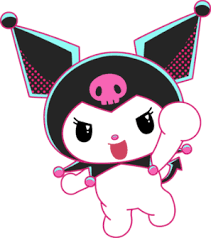
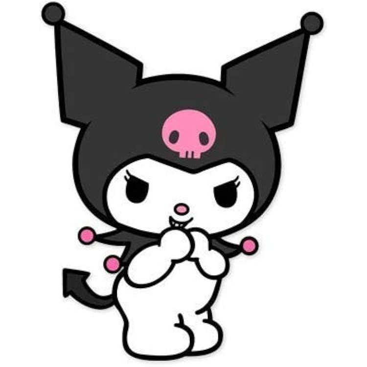
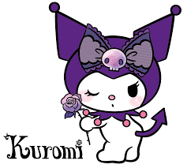
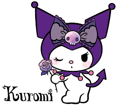

Kuromi, who calls herself My Melody's rival,
may seem wild or aggressive sometimes, but she is actually a very feminine type!
Her signature features are her black hood and the pink skull on it.
Her hobby is writing in her diary. She likes handsome boys and has recently
been into romance novels. Her favorite color is black, and her favorite food is rakkyo
(pickled scallions/shallots).